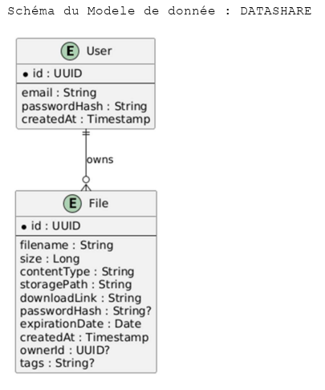

Modèle de données — DataShare¶
1. Description générale¶
Le modèle de données du MVP DataShare repose sur deux tables principales : users et files. Cette structure couvre la gestion des comptes, le stockage des métadonnées des fichiers et l’association entre un fichier et son propriétaire éventuel.
Table users¶
La table users stocke les comptes utilisateurs de l’application.
| Élément | Description |
|---|---|
| Identité | Identifiant unique de l’utilisateur au format UUID. |
| Authentification | Adresse e-mail et mot de passe haché. |
| Traçabilité | Date de création du compte. |
| Relation | Un utilisateur peut posséder plusieurs fichiers. |
Le mot de passe est conservé uniquement sous forme hachée. L’adresse e-mail est utilisée pour l’authentification et doit être unique.
Table files¶
La table files conserve les métadonnées nécessaires à la gestion des fichiers partagés. Le contenu physique du fichier est stocké sur le système de fichiers, tandis que la base de données conserve les informations permettant de le retrouver et de contrôler son accès.
| Élément | Description |
|---|---|
| Identité | Identifiant unique du fichier au format UUID. |
| Métadonnées | Nom, taille et type MIME du fichier. |
| Stockage | Chemin physique du fichier sur le serveur. |
| Partage | Lien unique permettant d’accéder au fichier. |
| Protection | Mot de passe optionnel, conservé sous forme hachée. |
| Expiration | Date à laquelle le partage n’est plus accessible. |
| Propriétaire | Utilisateur associé ou valeur NULL pour un téléversement anonyme. |
| Organisation | Tags optionnels associés au fichier. |
Relation entre les tables¶
La relation entre users et files est de type 1-N :
- un utilisateur peut posséder zéro, un ou plusieurs fichiers ;
- un fichier peut appartenir à un utilisateur ;
- un fichier téléversé anonymement n’a pas de propriétaire et possède un
ownerIdégal àNULL.
Cette relation permet d’appliquer un contrôle d’accès fondé sur la propriété du fichier.
2. Schema BDD¶

3. Dictionnaire des données¶
Entité User¶
| Attribut | Type | Obligatoire | Description |
|---|---|---|---|
id |
UUID | Oui | Identifiant unique du compte utilisateur. |
email |
String | Oui | Adresse e-mail utilisée pour l’authentification. Elle doit être unique. |
passwordHash |
String | Oui | Hash BCrypt du mot de passe utilisateur. |
createdAt |
Timestamp | Oui | Date et heure de création du compte. |
Entité File¶
| Attribut | Type | Obligatoire | Description |
|---|---|---|---|
id |
UUID | Oui | Identifiant unique du fichier. |
filename |
String | Oui | Nom affiché du fichier. |
size |
Long | Oui | Taille du fichier en octets. |
contentType |
String | Oui | Type MIME du fichier. |
storagePath |
String | Oui | Chemin physique utilisé pour retrouver le fichier. |
downloadLink |
String | Oui | Token ou lien unique de téléchargement. |
passwordHash |
String | Non | Hash du mot de passe de téléchargement, si le fichier est protégé. |
expirationDate |
Date | Oui | Date d’expiration du lien de partage. |
createdAt |
Timestamp | Oui | Date et heure du téléversement. |
ownerId |
UUID | Non | Identifiant du propriétaire ; NULL pour un téléversement anonyme. |
tags |
String | Non | Étiquettes facultatives associées au fichier. |
4. Règles de gestion¶
- Chaque utilisateur est identifié par un UUID unique.
- L’adresse e-mail d’un utilisateur est unique.
- Les mots de passe utilisateurs ne sont jamais stockés en clair.
- Chaque fichier possède un identifiant et un lien de téléchargement uniques.
- Le chemin physique permet d’associer la métadonnée au fichier stocké sur le serveur.
- Un fichier peut être protégé par un mot de passe facultatif.
- Un lien de téléchargement devient inaccessible après sa date d’expiration.
- La valeur
ownerId = NULLidentifie un fichier téléversé anonymement. - Les opérations de gestion d’un fichier authentifié doivent vérifier la correspondance entre
ownerIdet l’utilisateur connecté.
5. Synthèse¶
Le modèle de données DataShare sépare les informations d’authentification des métadonnées de fichiers. La table users gère les comptes, tandis que la table files gère les fichiers, leur stockage, leur partage et leur expiration.
Cette conception est adaptée au MVP, car elle reste simple tout en permettant de gérer les fichiers personnels et anonymes. Elle pourra évoluer ultérieurement avec des tables dédiées aux transferts, aux permissions avancées, à l’historique des téléchargements ou aux tags normalisés.